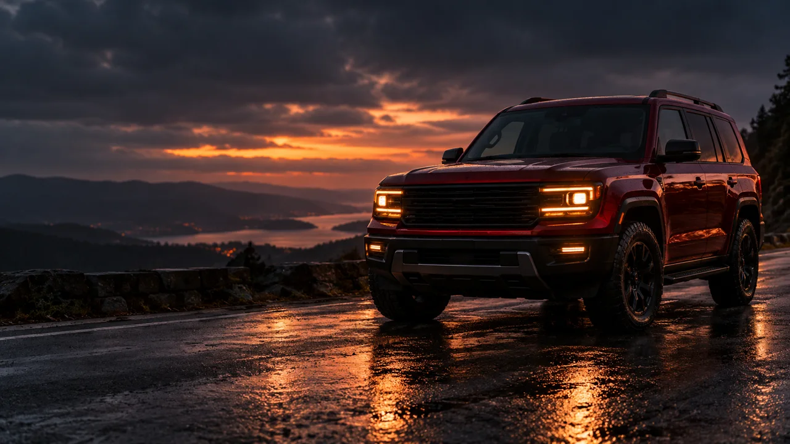

Bring
A four-wheel vehicle choice and same-colour references from useful angles.
WEEK 8 · DAY 1 / PLAYBOOK · SESSION 15
Choose a vehicle, plan its shots, generate motion that respects the reference, and review the draft.
Record references, shot plan, clips, final draft and review in the Homework Doc. The class names no separate submission destination.

YOUR MISSION
A four-wheel vehicle choice and same-colour references from useful angles.
An ordered shot plan, camera references, motion clips and an automobile ad draft.
Check vehicle identity, camera movement, wheels, background, road or water action and sound.
Save links and notes in the official Homework Doc. Browser progress does not sync to the Doc.
FOUR PRODUCTION TASKS
TASK 1
Input: A car, SUV or sedan; bikes use a different workflow in the class.
Save: Vehicle/model, colour, reference links and defining details in the Homework Doc.
Review: The pack shows one vehicle and colour from useful angles.
First fix: If the car keeps changing, improve the references or choose a better-supported vehicle.
Next: Carry the selected vehicle into the shot plan.
TASK 2
Input: The chosen vehicle, its references and your shot ideas.
Save: Shot plan, angle guides and the reference/method for each shot.
Review: Each shot has a clear move; start/end pairs share the vehicle and compatible setting.
First fix: Revise incompatible endpoints or choose another method for that shot.
Next: Generate each planned clip.
TASK 3
Input: Shot plan, vehicle references and matching angle/start/end images where appropriate.
Practice recipe: Try one supplied camera/motion idea from the session guide prompt examples. These are source examples; no single video model is required.
Save: Clip links and the method used for each shot.
Review: The vehicle remains recognizable and the visible motion fits the action.
First fix: Recheck references and endpoint compatibility; simplify the camera/action description if needed.
Next: Select clips and assemble the advertisement.
TASK 4
Input: Clips that best preserve the vehicle and perform the planned move.
Save: Draft link, strongest shot, issue and next fix in the Homework Doc.
Review: The sequence reads as one ad and the vehicle/motion remain coherent.
First fix: Revise the shot that breaks vehicle identity, motion continuity or the camera move.
Next: Complete the checklist and skill check, then finish in the Homework Doc.
PROGRESS REVIEW
Progress is saved in this browser only. It does not sync with your Homework Doc.
TOOLS MENTIONED IN CLASS
The transcript names these tools during image-reference work. They are not required if your account offers another suitable image model.
Find the same vehicle in useful views and keep the colour consistent.
Image models compared during vehicle image-generation work; check current account availability.
Compared with the same vehicle prompt to inspect how well the image preserves the car.
SKILL CHECK